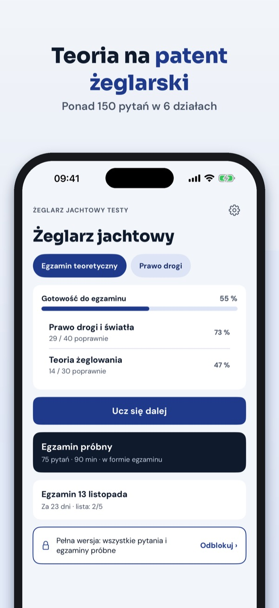
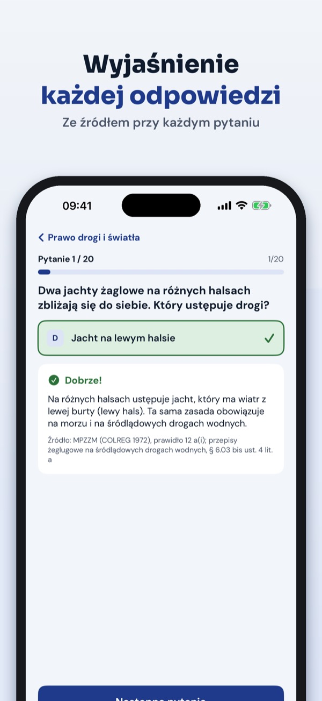

Egzamin na patent żeglarski


Żeglarz Jachtowy Testy pomaga przygotować się do egzaminu teoretycznego na patent żeglarza jachtowego – z wyjaśnieniem każdej odpowiedzi.
Bez zakupu możesz korzystać z 20 pytań, słownika, prawa drogi w skrócie i listy rzeczy na egzamin. Pełna wersja to jednorazowy zakup, który odblokowuje wszystkie pytania, egzaminy próbne i powtórkę błędów. Bez subskrypcji.
Pytania napisaliśmy sami na podstawie zakresu wymagań egzaminacyjnych z rozporządzenia w sprawie uprawiania turystyki wodnej. Żeglarz Jachtowy Testy jest niezależna i nie jest powiązana z PZŻ ani komisjami egzaminacyjnymi. Egzamin zdajesz przed komisją.
Terms of Use (EULA): https://www.apple.com/legal/internet-services/itunes/dev/stdeula/
Privacy: https://baytechbv.github.io/privacy/patent-zeglarski-pl/